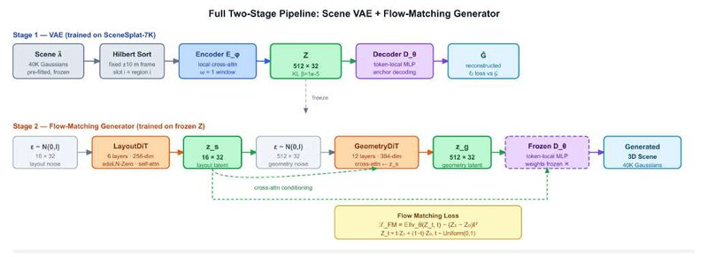

This thesis studies the standard two-stage recipe (a VAE that compresses a scene, then a flow-matching generator in its latent space) on thousands of unfiltered indoor 3DGS scenes from SceneSplat-7K. A seven-variant ablation shows that two choices decide whether the autoencoder generalises or memorises: fixed-frame Hilbert ordering of the Gaussians, and a windowed local encoder with a token-local decoder. Together they more than halve validation reconstruction error. A hierarchical layout-then-geometry flow-matching model reproduces the latent structure and recovers coarse layout from partial scans.
The project also showed why parameter-space supervision is ill-posed for 3DGS. A fixed decoder slot sees differently oriented surfaces across scenes, so the L2-optimal output collapses to an isotropic blob. The (scale, quaternion) parametrisation is also gauge-ambiguous, so L2 measures numeric rather than shape distance.
Follow-up: I replaced the continuous latent with a discrete VQ-VAE supervised in image space. I built the depth-masked fine-tuning pipeline end to end: OpenCV-to-renderer pose conversion, normalised intrinsics for a wide-angle capture rig, metric depth rendered with gsplat, and a loader for the raw attribute format. Fine-tuning improved held-out reconstruction from 17.0 to 19.2 dB PSNR, and LPIPS from 0.386 to 0.327.